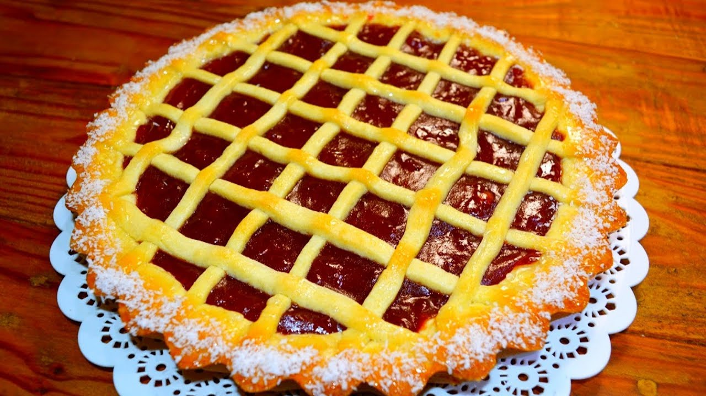

Galería de tortas
BROWNIE
Un brownie es un bizcocho de chocolate pequeño, típico de la gastronomía de Estados Unidos. Suelen servirse calientes con helado, a veces con crema de leche (o crème double), especialmente como postre. Hay muchas recetas y variantes de este postre, incluida, entre otras, la vegana. En la Argentina aunque los brownies según la receta original estadounidense son muy consumidos en las principales ciudades; también se preparan típicos brownies argentinos cuya masa está basada en la dulzona y marrón harina de algarrobo.
LEMON PIE

Lemon Pie o Tarta de limón es una tarta formada por una base de masa quebrada u hojaldre que se rellena con crema de limón. Esta tarta a menudo se complementa con un merengue, lo que resulta en tarta de limón con merengue. Se consume como postre o como parte de la merienda.
Cheesecake

Cheaseecake Un pastel de Queso es un postre muy popular desde el siglo XX hecho a base de ricota (requesón), queso quark, azúcar y algunas veces otros ingredientes. Es uno de los postres más consumidos del mundo y, quizás, uno de los más antiguos que utilizan lácteos diferentes de la leche. El primer registro que hace mención a la tarta de queso viene del año 2000 a. C.
PASTAFROLA
Pastafrola es una tarta artesanal típica de la gastronomía de Argentina, Paraguay y Uruguay. Se compone de una masa cubierta originalmente con dulce de batata y en una segunda instancia de la historia se comenzó a rellenar con dulce de membrillo. La cocción es al horno y es un acompañamiento típico de la merienda o del mate, o a toda hora del día.
TORTA RED VELVET

Torta red velvet o Pastel de Terciopelo Rojo es un pastel de chocolate con un color rojo oscuro o rojo brillante. Por lo general es preparado como un pastel en capas cubierto con un glaseado de queso cremoso o roux cocinado. Tradicionalmente, el pastel es glaseado con una capa de roux estilo francés, que es muy ligera y esponjada, pero toma mucho tiempo para preparar.
MILHOJAS

El postre milhojas es un dulce tradicional atribuido a la repostería francesa. Contiene merengue o crema pastelera o dulce de leche entre dos capas de hojaldre espolvoreado con azúcar glas. Tradicionalmente, este postre consiste en capas de hojaldre horneadas e intercaladas con crema pastelera o nata montada.
TORTA DE ZANAHORIA

Torta de zanahoria es un pastel dulce con zanahoria machacada mezclada en la masa. La zanahoria se ablanda en el proceso de cocción, y la tarta suele tener una textura densa y suave. Las zanahorias mejoran el sabor, textura y apariencia del pastel. En ocasiones se añade nuez tostada a la mezcla.
TORTA BALCARCE

El Postre Balcarce es la denominación que recibe un postre creado en la ciudad argentina de Balcarce. Se convirtió en uno de los dulces más emblemáticos del país. En su elaboración no se utilizan conservantes lo que da como resultado un singular sabor propio de las elaboraciones caseras. Básicamente está compuesto por un bizcocho con crema de leche, vainilla, merengue y dulce de leche, también se le coloca en la superficie ralladura de coco.